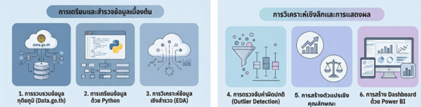
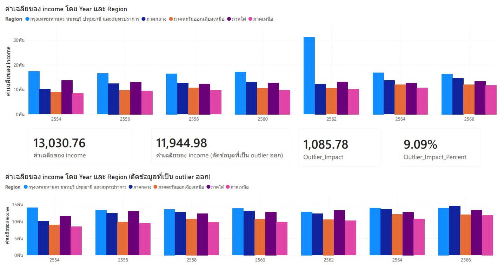
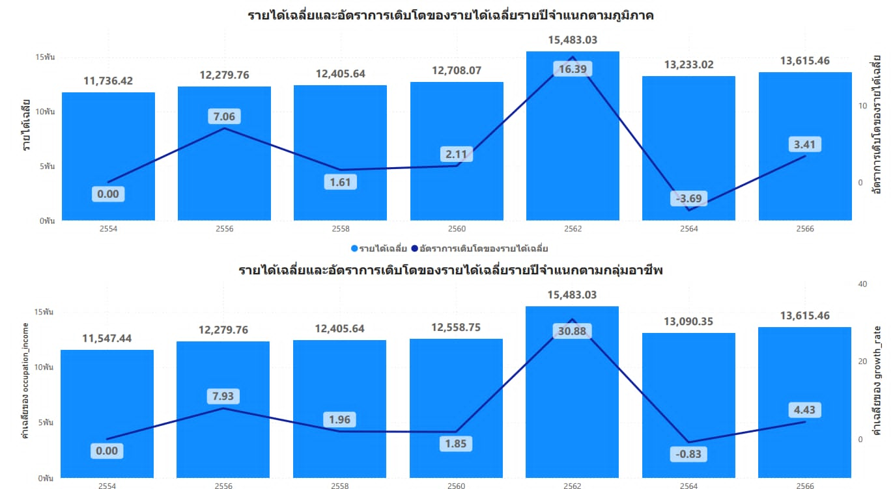
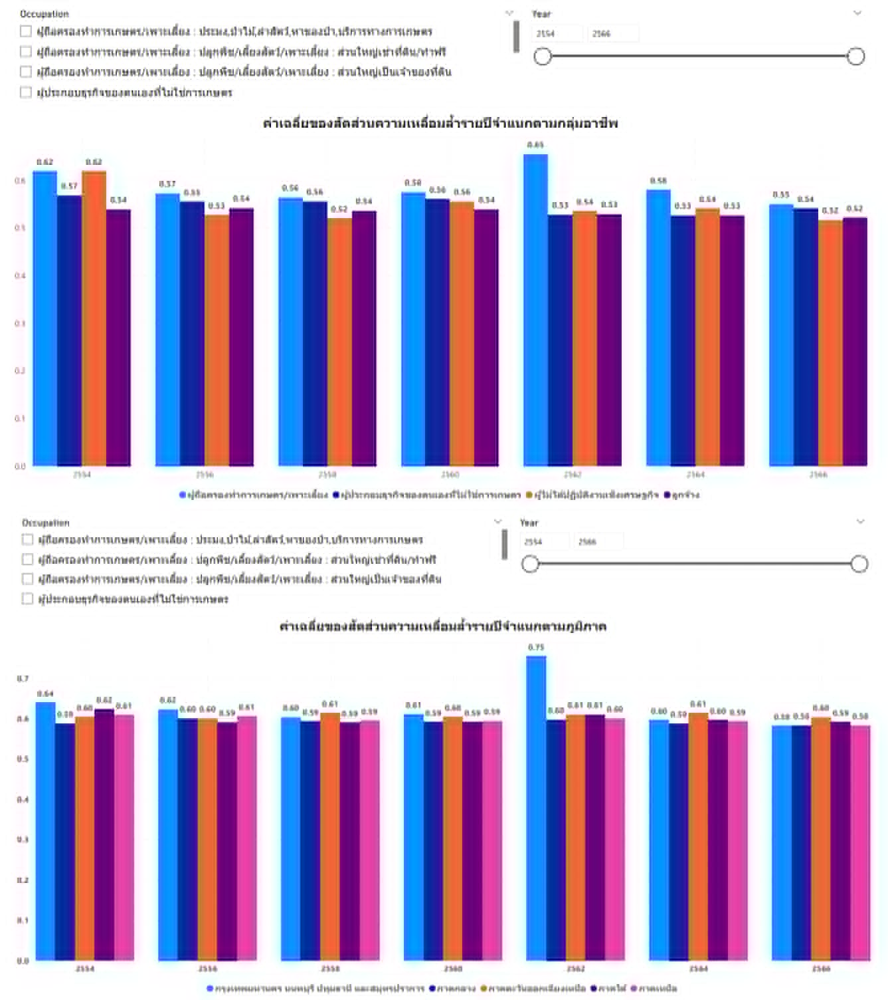
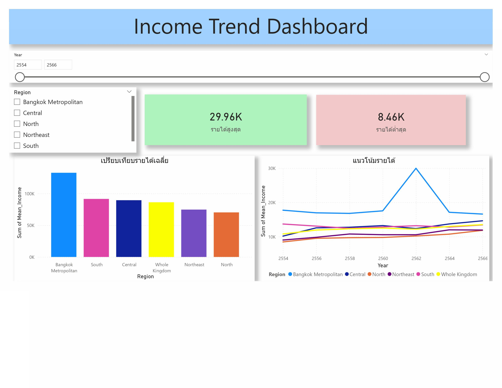

ที่มาและวัตถุประสงค์ของการวิจัย
ความเหลื่อมล้ำทางรายได้ระดับภูมิภาคในประเทศไทยยังคงเป็นประเด็นที่มีผลต่อการพัฒนาประเทศ โดยเฉพาะความแตกต่างในการกระจายโอกาสทางเศรษฐกิจ งานวิจัยนี้จึงนำข้อมูลเปิดภาครัฐด้านรายได้เฉลี่ยครัวเรือนจากสำนักงานสถิติแห่งชาติ (data.go.th) มาผ่านกระบวนการวิเคราะห์เชิงสำรวจ (EDA) และการคำนวณคุณลักษณะเชิงสถิติ เพื่อสะท้อนภาพเชิงพื้นที่อย่างเป็นรูปธรรม
สำรวจแนวโน้มรายได้
สำรวจลักษณะและทิศทางของรายได้ครัวเรือนในแต่ละภูมิภาคตลอดช่วง 13 ปีตามข้อมูลเปิด
วิเคราะห์การเติบโตและความเหลื่อมล้ำ
คำนวณอัตราการขยายตัว (Growth Rate) โครงสร้างรายได้ และประเมินความไม่เสมอภาคด้วย Gini Index
พัฒนาแดชบอร์ดสนับสนุนการตัดสินใจ
ออกแบบแดชบอร์ดเชิงโต้ตอบบน Power BI เพื่อการสืบค้นและเปรียบเทียบข้อมูลเชิงพื้นที่ได้อย่างรวดเร็ว
ระเบียบวิธีวิจัย (Methodology Pipeline)
กรอบการดำเนินงานวิจัยเชิงปริมาณตั้งแต่การนำเข้าข้อมูลจนถึงการแสดงผลเชิงโต้ตอบ

รูปที่ 1: ขั้นตอนการดำเนินงานของการวิจัย (Research Workflow Pipeline)
Data Preprocessing
รวบรวมข้อมูล จัดการ Missing values และแปลงปีพุทธศักราชเป็นมาตรฐาน
Outlier Detection
ใช้เทคนิค Z-score ร่วมกับ IQR Rule เพื่อระบุค่าผิดปกติและประเมินผลกระทบ
Feature Engineering
สร้างตัวแปรเชิงเวลา เช่น Growth Rate %, Income Share % และ Gini Index
Power BI Visualization
สร้างแดชบอร์ดแบบโต้ตอบ รองรับการฟิลเตอร์แยกภูมิภาคและลำดับเวลา
ผลการวิเคราะห์ข้อมูลและข้อค้นพบ (Key Results)
สรุปผลการวิจัยเชิงลึกจากการทดลองและการคำนวณทางสถิติ
รายได้เฉลี่ยรายภูมิภาค & ผลกระทบของ Outlier
จากการวิเคราะห์ข้อมูลปี 2554–2566 รายได้เฉลี่ยรวมอยู่ที่ 13,030.76 บาท โดย กรุงเทพฯ และปริมณฑล มีรายได้เฉลี่ยสูงที่สุด (ทิ้งห่างจากภาคอื่นชัดเจน) ขณะที่ ภาคเหนือและภาคตะวันออกเฉียงเหนือ มีรายได้เฉลี่ยต่ำที่สุด การตรวจสอบ Outlier พบว่าหากตัดค่าผิดปกติออก รายได้เฉลี่ยจะลดลงเหลือ 11,944.98 บาท (ต่างกัน 9.09%) งานวิจัยจึงคงค่าเดิมไว้เพื่อสะท้อนปรากฏการณ์ความเหลื่อมล้ำตามความเป็นจริง

รูปที่ 2: แผนภูมิแสดงรายได้เฉลี่ยรายภูมิภาคและผลกระทบของค่าผิดปกติ

รูปที่ 3: แผนภูมิแสดงอัตราการเติบโตของรายได้รายภูมิภาคและรายกลุ่มอาชีพ
อัตราการเติบโตของรายได้ (Growth Dynamics)
อัตราการเติบโตมีจุดสูงสุดในปี พ.ศ. 2562 โดยมีรายได้เฉลี่ย 15,483.03 บาท อัตราการเติบโตเฉลี่ยรายภูมิภาคอยู่ที่ 16.39% และกลุ่มอาชีพเติบโตถึง 30.88% อย่างไรก็ตาม ในปี 2564 ได้รับผลกระทบจากสถานการณ์ COVID-19 ทำให้รายได้เฉลี่ยหดตัวลงอย่างมีนัยสำคัญ ก่อนจะเริ่มปรับตัวเพิ่มขึ้นอีกครั้งในปี 2566
ดัชนีความเหลื่อมล้ำของรายได้ (Gini Index)
เมื่อวิเคราะห์ค่า Gini Index เพื่อประเมินความไม่เท่าเทียม พบว่าเมื่อจำแนกตามภูมิภาค ค่าดัชนีอยู่ในช่วง 0.58 – 0.75 และเมื่อจำแนกตามกลุ่มอาชีพ อยู่ในช่วง 0.52 – 0.82 ซึ่งสะท้อนความเหลื่อมล้ำที่อยู่ในระดับสูงอย่างมีนัยสำคัญ อีกทั้งครัวเรือนไทยยังพึ่งพา "รายได้ประจำ" สูงถึงกว่าร้อยละ 90

รูปที่ 4: แผนภูมิแสดงความเหลื่อมล้ำเฉลี่ยของรายได้รายปีจำแนกตามกลุ่มอาชีพและภูมิภาค
หน้าแดชบอร์ด Power BI สำหรับการวิเคราะห์รายได้
พัฒนาขึ้นเพื่อแปลงข้อมูลตัวเลขทางสถิติที่ซับซ้อนให้เห็นแนวโน้มเชิงพื้นที่ได้อย่างชัดเจน มีตัวกรองเลือกดูตามปีและภูมิภาค พร้อมคำนวณ KPI ทางสถิติแบบไดนามิก
